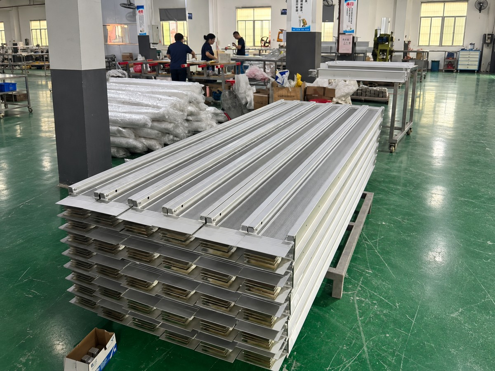

Busbar TrunkingWater Treatment Plants
Compact Busway
Copper conductors, an aluminium-alloy enclosure and modular sections for low-voltage distribution in buildings and industrial facilities. Configuration follows the site layout. Current ratings, conductor sizes and protection ratings: 待确认.